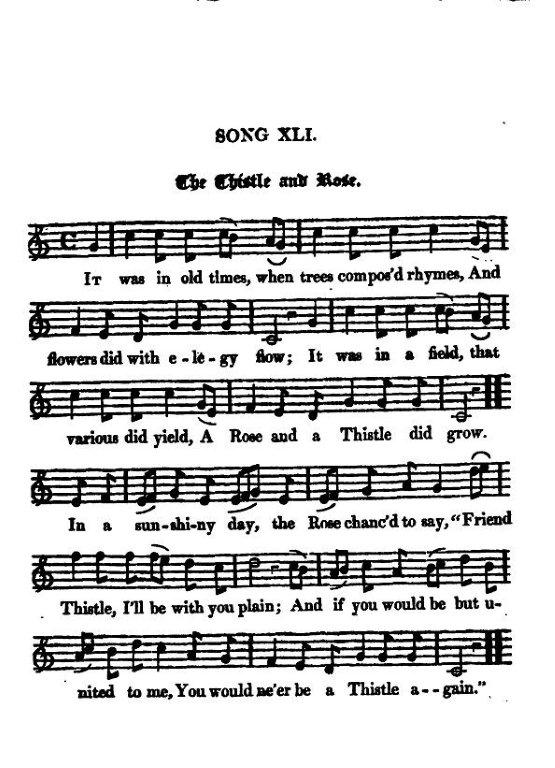

The Thistle and Rose
Le Chardon et la Rose
The Act of Union (17th January 1707) - L'Acte d'union (17 janvier 1707)
By Mr. Wattas stated by J. Ritson's in his "Scotish Songs, Vol. II, p. 52, Class III, N°14, 1794. (Without tune)
Tune - Melodie
"Auld King Coul"
from Scots Musical Museum, volume 5, N°473, 1796
and Hogg's "Jacobite Reliques" , vol. I, N°41, 1819
Sequenced by Christian Souchon

|
To the tune:
The tune is a nursery rhyme first recorded by William King in his "Useful Transactions in Philosophy" in 1708-9. The modern version of the rhyme is: Old King Cole was a merry old soul And a merry old soul was he; He called for his pipe, and he called for his bowl And he called for his fiddlers three. Every fiddler he had a fiddle, And a very fine fiddle had he; Oh there's none so rare, as can compare With King Cole and his fiddlers three. Before he inspired the surname of a Pop singer, King Cole could have been "Coel Hen" (who allegedly died in 440), a ruler of the formerly Brittonic speaking part of southern Scotland, mentioned by Geoffrey of Monmouth in his "History of the Kings of Britain". Source: "Wikipedia". |
A propos de la mélodie:
Le timbre est un chant de nourrice cité par William King dans ses "Transactions philosophiques utiles" en 1708-9 La version moderne est la suivante: Le vieux roi Cole était un bon vieux drôle Mais oui, un bon vieux drôle, ma foi. "Apportez-moi ma pipe avec mon bol! Que mes violoneux viennent tous les trois!" Chaque violoneux parut alors avec son crincrin (fiddle). Une bel instrument, croyez-moi! Il n'est rien de précieux dans ce bas monde qui se compare A Cole et aux violoneux du roi. Avant d'avoir inspiré le surnom de Nat 'King' Cole, le roi Cole peut avoir été "Coel Hen", un ancien roi de l'Ecosse méridionale brittonique (réputé mort vers 440) dont parle Geoffroy de Monmouth dans son "Historia regum Britanniae". |

|
THE THISTLE AND ROSE [1]
1. It was in old times, When trees compos'd rhymes, And flowers did with elegy flow; It was in a field, That various did yield, A Rose and a Thistle did grow. On a sun-shiny day, The Rose ehanc'd to say, "Friend Thistle, I'll be with you plain ; And if you would be but united to me, You would ne'er be a Thistle again." 2.Says the Thistle, "My spears Shield mortals from fears, Whilst thou dost unguarded remain; And I do suppose, Though I were a Rose, I'd wish to turn Thistle again." "0 my friend," says the Rose, "You falsely suppose, Bear witness, ye flowers of the plain! You would take so much pleasure In beauty's vast treasure, You would ne'er be a Thistle again." 3. The Thistle at length, Preferring the Rose To all the gay flowers of the plain, Throws off all her points, Herself she anoints, And now are united the twain. But one cold stormy day, While helpless she lay, Nor longer could sorrow refrain, She fetch'd a deep groan, With many Ohon ! " O were I a Thistle again! [2] |
LE CHARDON ET LA ROSE [1]
1. Quand, au temps passé Les arbres rimaient Et les fleurs composaient des chansons, Dans un potager Le hasard a fait Voisiner la rose et le chardon. Par un beau jour de mai La rose a déclaré: "Ami chardon, je parle sans détour: Si tu voulais bien Unir ton sort au mien, Tu deviendrais rose pour toujours." 2. Le chardon reprend: "Grâce à mes piquants Je suis protégé bien mieux que toi Aussi je suppose Que, devenu rose, Je me repentirais de ce choix." "Ami", lui dit la fleur, "Profonde est ton erreur. Chez les fleurs tout cela n'a plus cours. Car rien ici-bas Ne vaut la beauté, crois-moi. Tu deviendras rose pour toujours." 3. Le chardon sévère Sentant qu'il préfère La rose à toutes les autres fleurs, Jeta ses épines Et l'onction divine L'unit enfin à son âme-soeur. Mais un froid ouragan L'a surpris tout tremblant. Sa voix, entrecoupée de sanglots, De profonds soupirs, Exprimait son repentir "Puissé-je être un chardon à nouveau!" [2] (Trad. Christian Souchon(c)2009) |
|
[1] The national floral emblems of Scotland and England, respectively.
This allegory inspired the poet William Dunbar (c. 1450 - c. 1515) who wrote, to celebrate King James IV's nuptials, his famous poem "The Thrissill and the Rois" beginning thus: "Quhen Merch wes with variand windis past..." [2] "This is an allegorical song, written about the year 1710, when the effects of the Union were most severely felt in this country. Its merit is not of the first rate, though it is a fair specimen of a certain illegitimate kind of song-writing which became fashionable about that period..." (Note by Hogg to this song). *************************** Here are some additional considerations to the original song contributed by Mr Richard Carlyon: "One may date the words by "pipe" (ie "tobacco pipe"). That it is 'called for' along with "bowl" indicates it is not an instrument . There is some discussion by T.Stephens, 'The Literature of the Kymry' , 1876 edition, pp. 61-62 on the varied use of harp and 'pipe' and violin, the last being the [Welsh]"CRWTH". The 'pipe' he discusses is in fact the "bagpipes", 'for it is really impossible that the bagpipe could be a favoured instrument, where the clear tones of the harp had once been heard.' He speaks of differences between Welsh and Irish wandering minstrels. But I have to say the 'fiddle' or stringed instrument played with a bow becomes more common far later than bardic times. T. Stephens then quotes: 'Nid oes nae angel na dyn, Nad wyl pan ganai delyn...' 'Neither angels nor men could refrain from weeping, When he played the harp.' from "Marwnad Sion Eos" , (John the Nightingale.) trans. Stephens." To complete these remarks: "Old king Cole" has a counterpart in France: a satirical song composed between 1750 and 1800 which has become a very popular nursery rhyme: "Le bon roi Dagobert qui a mis sa culotte à l'envers" (Good king Dagobert who put on his trousers backward). Dagobert was a historical figure who reigned between 629 and 639. |
[1] Les emblèmes floraux respectifs de l'Ecosse et de l'Angleterre.
Cette allégorie inspira au poète William Dunbar (c. 1450 - c. 1515) son fameux poème "Le chardon et la rose" où il célèbre les épousailles du roi Jacques IV et qui commence ainsi: "Quand Mars eut passé chargé de bourrasques". [2] "Ceci est un chant allégorique composé vers 1710, à une époque où les effets de l'Union se faisaient sentir dans ce pays de la façon la plus néfaste. Le texte est loin d'être éblouissant, mais c'est l'archétype des chants subversifs sur le même thème qu'on vit fleurir à cette époque..." (Note de Hogg) *************************** Voici d'autres considérations touchant le chant original communiquées par M. Richard Carlyon: "On peut vouloir dater le chant à partir du mot "pipe" (entendez "pipe à tabac"). Le fait qu'on la 'mande' en même temps qu'un "bol" exclut qu'il s'agisse d'un intrument. C'est l'avis de T. Stephens, dans 'La littérature des Kymry' , édition de 1876, pp. 61-62 qui traite de l'usage de la harpe, de la 'pipe' et du violon, ce dernier étant appelé "CRWTH" en gallois. La 'pipe' qu'il examine est la cornemuse (bagpipes), 'car il est impossible que la cornemuse puisse être un instrument privilégié par quiconque a jamais entendu les accents mélodieux de la harpe.' Il examine les différences entre les jongleurs et ménestrels gallois et irlandais. Mais il me semble que l'usage de la "violon" (fiddle) et les instruments à archet s'est généralisé bien après l'époque des bardes. T. Stephens cite alors ce poème gallois: 'Nid oes nae angel na dyn, Nad wyl pan ganai delyn...' 'Jamais ne fut ange ni homme Que chant de harpe ne fit pleurer.' tiré de "Marwnad Sion Eos" , (Elégie de Jean le Rossignol.)" Pour compléter ces remarques: "Old king Cole" a un équivalent français, une chanson satirique composée entre 1750 et 1800 dont les enfants se sont emparés: "Le bon roi Dagobert qui a mis sa culotte à l'envers". Dagobert a réellement existé et a régné entre 629 et 639. |
|
|
|
Modern "Auld King Cole"